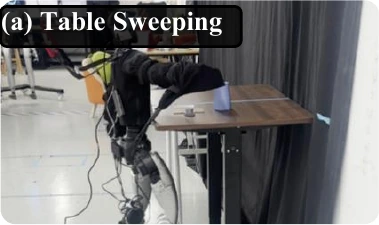
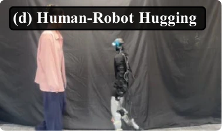
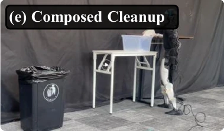

Uni-VLaT

Uni-VLaT adapts pretrained VLA policies with whole-body tactile sensing and training-time prediction of future tactile, proprioceptive, and visual representations.
Abstract
Physical contact often determines how a humanoid should respond during loco-manipulation, yet vision and proprioception provide only indirect evidence of interaction, especially when the contact region is occluded. Distributed tactile sensing preserves spatially resolved contact patterns across the robot body.
Uni-VLaT adapts pretrained vision-language-action policies with a tactile pathway trained for both action generation and prediction of future tactile, proprioceptive, and visual representations. Contextualized tactile features anchor these complementary views of physical interaction. Across five real-robot tasks, Uni-VLaT achieves 75% average success, compared with 32% for No Tactile and 68% for tactile input without prediction. Evaluation with Isaac-GR00T and π0.5, together with controlled ablations, supports the benefits of post-DiT tactile context and absolute future targets.
- 75%
- Average success across five tasks
- +43%
- Absolute success-rate gain over No Tactile
32% → 75% on Isaac-GR00T - +7%
- Absolute success-rate gain over tactile input without prediction
68% → 75%
Real-world Demo





Whole-body interaction: Table sweeping, basket loading, back-tap walking, human–robot hugging, and composed cleanup. Representative stills from the five real-robot tasks.

Real-robot interaction sequences spanning tactile-triggered locomotion, contact-guided manipulation, changing load, human interaction, and sequential loco-manipulation.
Table Sweeping: Sweep five objects across the tabletop center line under varying table heights. All five must cross within 60 seconds; dropping any object is a failure.
Basket Loading: Support a basket as a person adds objects, then release it appropriately when the person takes it away. Success requires stable support without dropping the basket or its contents.
Back-Tap Walking: Start moving forward within one second of contact on the back, then stop within one second after contact is released.
Human–Robot Hugging: Embrace people of different sizes and release both arms when the person disengages, without unsafe contact or human intervention.
Composed Cleanup: Gather all tabletop rubbish into a container, carry it to a waste bin, and deposit it with its contents. Any failed stage makes the rollout unsuccessful.
Method
Tactile as a physical anchor. Tactile sensing directly observes contact at the robot body, proprioception captures the resulting body response, and vision captures changes in the scene. Uni-VLaT connects these complementary observations through future representation prediction while retaining the semantic, visual, and action priors of a pretrained VLA policy.

Spatial and temporal tactile tokens interact with visual, language, proprioceptive, and action features inside the pretrained policy. The contextualized tactile tokens provide a shared context for predicting future physical interaction across modalities.
1. Tactile Adaptation
Distributed tactile sensors cover eight body regions: the chest, central back, left and right shoulders, left and right upper back, and left and right arms. Sensor readings are denoised and normalized by region. Independent regional MLPs map measurements to a common feature width. Eight learned attention queries aggregate the regional embeddings into eight spatial tactile tokens; each token can combine information from multiple body regions. Axial pooling reduces sensitivity to sleeve rotation while retaining contact location along the arm.
A lightweight temporal Transformer aggregates four causal tactile frames with learned time embeddings and a residual connection to the current frame. A learned scalar gate scales the tactile tokens before they join proprioceptive and noisy action tokens in the DiT trunk. Visual and language features enter through cross-attention.
2. Multimodal Prediction
After multimodal policy attention, the tactile tokens are pooled into a tactile-anchored cross-modal context. Three modality-specific predictors estimate four future steps of tactile, proprioceptive, and visual representations in their respective latent spaces.
The predictors learn absolute future latents in three separate modality spaces. Tactile and proprioceptive targets come from exponential-moving-average encoders; visual targets come from a frozen pretrained encoder. Flow-matching action supervision and the three predictive objectives jointly train the policy.
At deployment, the predictive heads and target encoders are omitted. The policy generates chunks of 64-dimensional motion tokens for the pretrained SONIC whole-body controller, which produces joint-position targets for coordinated upper- and lower-body execution.
Results
On a Unitree G1 with Isaac-GR00T, Uni-VLaT achieves 75% average success across five contact-rich tasks, compared with 32% without tactile sensing, 68% with tactile input alone, and 69% with tactile-only prediction. Each task uses 50 demonstrations, and each main-table configuration is evaluated over 20 real-robot rollouts. Instability, falling, an emergency stop, or any human intervention counts as failure.
| Task | No Tactile | Tactile w/o Pred. | Tactile Prediction | Uni-VLaT |
|---|---|---|---|---|
| Back-Tap Walking | 0 | 85 | 90 | 85 |
| Table Sweeping | 45 | 60 | 60 | 75 |
| Basket Loading | 30 | 65 | 70 | 80 |
| Human–Robot Hugging | 55 | 80 | 75 | 80 |
| Composed Cleanup | 30 | 50 | 50 | 55 |
| Average | 32 | 68 | 69 | 75 |
Tactile w/o Pred. adds sensing without predictive supervision. Tactile Prediction additionally predicts future tactile representations. Uni-VLaT jointly predicts future tactile, proprioceptive, and visual representations.
Compared with tactile input alone, Uni-VLaT improves Table Sweeping from 60% to 75% and Basket Loading from 65% to 80%. It reaches 80% on Human–Robot Hugging and 55% on Composed Cleanup. For Back-Tap Walking, tactile sensing is the dominant factor: all tactile-enabled variants perform well, and tactile-only prediction achieves the highest success rate of 90%.
Contact Dynamics
Basket Loading tests adaptation to a changing physical load. The recorded Uni-VLaT rollout shows a lower contact response and changes around successive loading events, while No Tactile maintains a relatively high contact level after establishing support. These traces illustrate interaction behavior; they are not a calibrated force measurement or an aggregate safety metric.

How the tactile response is measured
For each time step, subtract an additional deadband of 2 from each of the 256 baseline-subtracted right-arm taxel readings, clamp negative values to zero, and average across taxels: y(t) = (1/256) ∑ max(xc(t) − 2, 0). The vertical axis is in arbitrary ADC units.
Cross-policy Evaluation
The same tactile adaptation principle improves both Isaac-GR00T and π0.5 on contact-guided sweeping and tactile-triggered walking. Within each comparison, methods share demonstrations, action targets, and the downstream control interface.

| Backbone | Task | No Tactile | Uni-VLaT |
|---|---|---|---|
| Isaac-GR00T | Table Sweeping | 45 | 75 |
| Isaac-GR00T | Back-Tap Walking | 0 | 85 |
| π0.5 | Table Sweeping | 30 | 60 |
| π0.5 | Back-Tap Walking | 0 | 90 |
Diffusion Policy (DP), trained from scratch to convergence with the same data and interface, is N/A: its outputs were rejected by deployment safety constraints before execution, so no success rate was measured.
Predictive Context Ablation
| Variant | Sweeping | Back-Tap | Average |
|---|---|---|---|
| Full Uni-VLaT | 75 | 85 | 80 |
| Multimodal Prediction | 40 | 80 | 60 |
| Pre-DiT Tactile Prediction | 30 | 80 | 55 |
| Delta Prediction Targets | 20 | 50 | 35 |
Full Uni-VLaT reuses the 20-rollout main evaluation; each other variant uses 10 rollouts per task. All variants retain the four-frame tactile history and action-learning objective.
Context matters. Multimodal Prediction uses visual, tactile, and proprioceptive features to predict all three future modalities. Pre-DiT Tactile Prediction uses only pre-DiT tactile representations as the source for all three predictors. Full Uni-VLaT instead predicts from the contextualized post-DiT tactile states, achieving 80% average success versus 60% and 55% for these alternatives.
Persistent contact matters. Replacing absolute future latents with future-minus-current delta targets reduces average success from 80% to 35%. Absolute targets preserve persistent contact and body-state information as well as changes over time.
Conclusion & Limitations
Uni-VLaT adapts pretrained VLA policies for contact-rich humanoid loco-manipulation by integrating whole-body tactile sensing and predicting future tactile, proprioceptive, and visual representations during training. Across five real-robot tasks, it achieves 75% average success with Isaac-GR00T. Cross-policy experiments and controlled ablations support the value of tactile-anchored multimodal context and absolute future targets for learning physical interaction.
Tactile arrays remain sensitive to sensor noise and mounting variation. Limited whole-body tactile simulation restricts large-scale robustness studies, and the real-robot evaluation covers five representative tasks. Tactile-as-instruction behaviors mainly benefit from access to contact signals; richer interactions demand finer tactile regulation and more precise contact control.